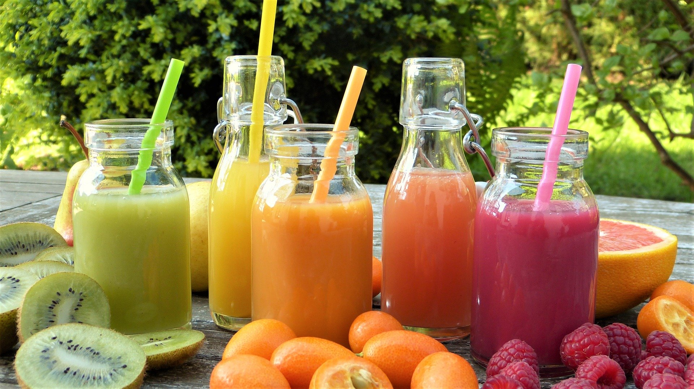

DESCRIPCIÓN
Nos enorgullece ofrecer a nuestros clientes una experiencia de sabor excepcional, utilizando solo frutas frescas y saludables en cada uno de nuestros deliciosos jugos. Nuestra pasión por la salud y el bienestar se refleja en cada sorbo que ofertamos, y nos esforzamos por ser el destino preferido para quienes buscan una alternativa saludable y refrescante en su día a día.
Misión: Nuestra misión es promover un estilo de vida saludable y equilibrado a través de la oferta de jugos de frutas naturales y nutritivos. Nos comprometemos a utilizar solo ingredientes frescos y de la mejor calidad en cada uno de nuestros productos. Queremos ser una fuente confiable de nutrición deliciosa, contribuyendo al bienestar y la vitalidad de nuestros clientes.
Visión: Nuestra visión es convertirnos en la principal referencia en la industria de los jugos naturales, reconocidos por nuestra calidad excepcional y compromiso con la salud. Buscamos expandir nuestra presencia para llegar a más personas en busca de opciones de alimentos y bebidas que sean beneficiosas para su cuerpo y su mente. Aspiramos a ser un agente de cambio en la promoción de la alimentación consciente y aportar de manera positiva a la salud de nuestras comunidades.